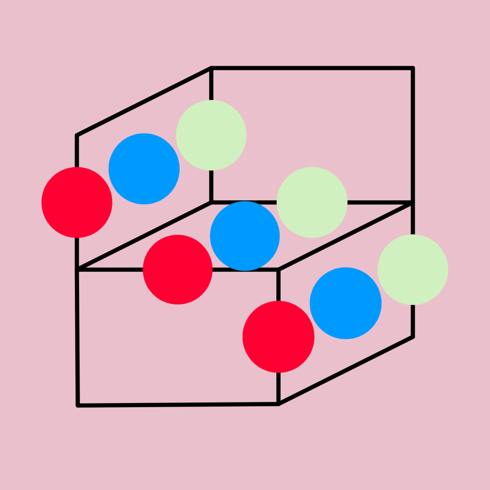

I have a hard time coming to terms with "true randomness" simply because by definition we can never be sure something is indeed truly random. No test can exist to assess this claim. This below is an imagination of how such a thing might exist.
Consider every outcome to be the product of a game with certain rules. Observe sufficient outcomes of the game and bam, one can fit distributions to predict the outcomes. Change the rules and suddenly the outcome is unpredictable, that is until sufficient games are played under the new rules.
In this sense, a truly random system would be one which generates outcomes from a single game, played under a unique and novel ruleset that will never repeat. Impossible for us to determine the rules, but nevertheless generated by rules. These unique rulesets swap with the passing of time. In this view there are two processes: Those that are inferred from the past and persist in time (classical random systems) and those generated for each tick of time: chaos, CAs, evolution and digits of Pi.
We peculiarly say that these last ones are deterministic systems: but maybe their formulas have been mistaken for knowledge, when they are actually formulas for observation (?). Random variable inference seems like predicting the future, but it's actually a prediction done in the past that is stable in time. Prediction of the future is inaccessible to us and is the reason why chaotic systems, cellular automatas and digits of Pi cannot be known before observing them.
